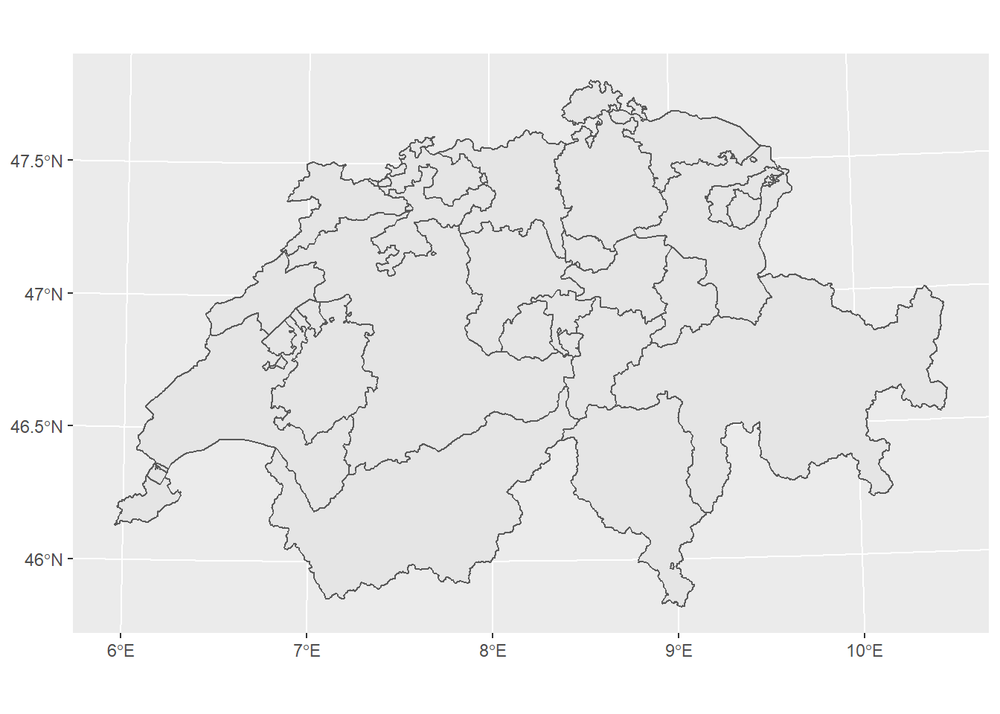

6.2 Projections and Transformations Toolset
Quite often in GIS, users found themselves before the necessity of transforming (reprojecting) the coordinate system of a dataset (vector or raster). In fact this is one of the most commonly used operations. In ArcGIS pro the aforementioned action is performed using the following tools:
Project (Data Management)-> Projects spatial data from one coordinate system to another.Project Raster (Data Management)-> Transforms a raster dataset from one coordinate system to another.
The question now is how we can perform similar operations with R.
6.2.1 Reproject vector data in R
For our example we will use the following dataset.
- bezirke.gpkg -> Dataset that depicts the Municipal structure in Switzerland
R and more specifically sf package offers options (functions) not only for transforming the coordinate system of a dataset, but also for identifying the current existing one. Let’s dive in :)
# Importing the dataset
library(sf)
bezirke <- read_sf("sample_data/other/bezirke.gpkg") # Visualising the imported dataset
library(ggplot2)
ggplot() + geom_sf(data = bezirke)
In order to identify the current coordinate system of a dataset, sf package offers the function st_crs. The main usage of the function is to retrieve the coordinate reference system from an sf object.
# retrieving the coordinate of the imported layer
st_crs(bezirke)## Coordinate Reference System: NAAs an output we received that there is no assigned coordinate system to this specific dataset. st_set_crs function helps us assigning a coordinate system to a dataset.
# Assigning the World Geodetic System (WGS84) as a coordinate system to our dataset
bezirke <- st_set_crs(bezirke, 4326)In the function above, the number 4326 represents the EPSG Geodetic Parameter Dataset (EPSG) of the respective coordinate system. EPSG is a public registry of geodetic datums, spatial reference systems, Earth ellipsoids, coordinate transformations and related units of measurement.
st_crs(bezirke)## Coordinate Reference System:
## User input: EPSG:4326
## wkt:
## GEOGCRS["WGS 84",
## DATUM["World Geodetic System 1984",
## ELLIPSOID["WGS 84",6378137,298.257223563,
## LENGTHUNIT["metre",1]]],
## PRIMEM["Greenwich",0,
## ANGLEUNIT["degree",0.0174532925199433]],
## CS[ellipsoidal,2],
## AXIS["geodetic latitude (Lat)",north,
## ORDER[1],
## ANGLEUNIT["degree",0.0174532925199433]],
## AXIS["geodetic longitude (Lon)",east,
## ORDER[2],
## ANGLEUNIT["degree",0.0174532925199433]],
## USAGE[
## SCOPE["unknown"],
## AREA["World"],
## BBOX[-90,-180,90,180]],
## ID["EPSG",4326]]After rerunning the st_crs function, we are getting now that the assigned
coordinate system of the dataset is World Geodetic System (WGS84).
As a next, we might want to transform the dataset to the Swiss coordinate system.
The respective EPSG for code for the latest Swiss coordinate system
(CH1903+LV95) is 2056. For this purpose we use the st_transform function of the sf package.
bezirke_swiss <- st_transform(bezirke, 2056)
# retrieve the coordinate system
st_crs(bezirke_swiss)## Coordinate Reference System:
## User input: EPSG:2056
## wkt:
## PROJCRS["CH1903+ / LV95",
## BASEGEOGCRS["CH1903+",
## DATUM["CH1903+",
## ELLIPSOID["Bessel 1841",6377397.155,299.1528128,
## LENGTHUNIT["metre",1]]],
## PRIMEM["Greenwich",0,
## ANGLEUNIT["degree",0.0174532925199433]],
## ID["EPSG",4150]],
## CONVERSION["Swiss Oblique Mercator 1995",
## METHOD["Hotine Oblique Mercator (variant B)",
## ID["EPSG",9815]],
## PARAMETER["Latitude of projection centre",46.9524055555556,
## ANGLEUNIT["degree",0.0174532925199433],
## ID["EPSG",8811]],
## PARAMETER["Longitude of projection centre",7.43958333333333,
## ANGLEUNIT["degree",0.0174532925199433],
## ID["EPSG",8812]],
## PARAMETER["Azimuth of initial line",90,
## ANGLEUNIT["degree",0.0174532925199433],
## ID["EPSG",8813]],
## PARAMETER["Angle from Rectified to Skew Grid",90,
## ANGLEUNIT["degree",0.0174532925199433],
## ID["EPSG",8814]],
## PARAMETER["Scale factor on initial line",1,
## SCALEUNIT["unity",1],
## ID["EPSG",8815]],
## PARAMETER["Easting at projection centre",2600000,
## LENGTHUNIT["metre",1],
## ID["EPSG",8816]],
## PARAMETER["Northing at projection centre",1200000,
## LENGTHUNIT["metre",1],
## ID["EPSG",8817]]],
## CS[Cartesian,2],
## AXIS["(E)",east,
## ORDER[1],
## LENGTHUNIT["metre",1]],
## AXIS["(N)",north,
## ORDER[2],
## LENGTHUNIT["metre",1]],
## USAGE[
## SCOPE["unknown"],
## AREA["Europe - Liechtenstein and Switzerland"],
## BBOX[45.82,5.96,47.81,10.49]],
## ID["EPSG",2056]]